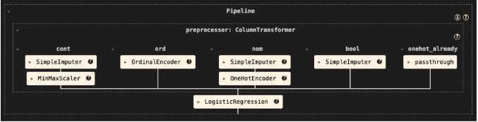

Modeling Approach
The prediction task was framed as a
binary classification problem, determining whether
a restaurant’s average Yelp rating is ≥ 4 stars.
All preprocessing and modeling steps were organized through a
unified Scikit-learn Pipeline to ensure
consistency, prevent data leakage, and enable reproducible
MLflow-tracked experiments.
Both linear and ensemble models were compared to understand how
structured metadata relates to rating outcomes. Logistic Regression
and Elastic Net served as interpretable baselines, while Random
Forest and XGBoost captured nonlinear interactions across amenities,
operating patterns, pricing, and review behavior. Model selection
and tuning were performed using
5-fold stratified cross-validation with randomized
hyperparameter search, optimizing primarily for ROC-AUC and
F1-score.
Preprocessing
- 80/20 train–test split with stratification
- Numeric features: median imputation + MinMax scaling
-
Categorical & boolean fields: one-hot or ordinal encoding
-
All transformations executed within a
ColumnTransformer + Pipeline to
ensure leakage-free preprocessing
Supervised Models
- Logistic Regression (baseline interpretability)
- Elastic Net (L1/L2 regularization)
- Random Forest (nonlinear interactions)
- XGBoost (gradient boosting)
Unsupervised Model
K-Prototypes clustering was applied to identify
natural restaurant archetypes across mixed numerical and
categorical features.
- Elbow method supported
k = 3
- PCA projection used to visualize separation
- Clusters: family-casual, social dining, upscale formats
ML Pipeline
The end-to-end machine learning workflow was implemented using a
unified Scikit-learn pipeline, enabling consistent preprocessing
across folds, reproducible experiment execution, and streamlined
integration with MLflow.
- ColumnTransformer for imputation, scaling, and encoding
- Pipeline linking preprocessing → model training
- 5-fold stratified cross-validation
- RandomizedSearchCV hyperparameter tuning
- Comprehensive MLflow logging and comparison

Unified Scikit-learn pipeline combining imputation, encoding,
scaling, and model training through a ColumnTransformer and
Pipeline.
Model performance was assessed using accuracy, precision, recall,
F1-score, and ROC-AUC. Ensemble methods outperformed linear
baselines, indicating that Yelp metadata contains nonlinear patterns
that tree-based models capture more effectively.